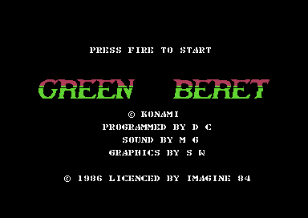

<meta charset="utf-8">
<meta name="viewport" content="width=device-width, initial-scale=1">
<title>Green Beret</title>
<link rel="preconnect" href="https://fonts.googleapis.com">
<link rel="stylesheet" href="https://fonts.googleapis.com/css2?family=Lato:wght@400;700;900&family=IBM+Plex+Mono:wght@400;500&display=swap">
<style>
:root{
  --bg:#23262d; --paper:#e9e7e1; --surface:#ffffff; --surface-2:#f1efea; --line:#d5d3cc; --line-soft:#e0ded8;
  --ink:#2f3136; --ink-soft:#55585f; --ink-mute:#80838a;
  --link:#1f5fa8; --link-hover:#154480; --accent:#1f5fa8;
  --amber:#c25a00; --cyan:#1f5fa8; --coral:#d04a3a; --green:#2a8a4a; --violet:#4a5bd6; --hl:#fff0c2;
  --chip:#2f3136; --chip-ink:#ffffff;
  --c64blue:#40318d; --c64grey:#686868;
  --fd:'Lato',system-ui,sans-serif; --fb:'Lato',system-ui,sans-serif; --fm:'IBM Plex Mono',ui-monospace,Menlo,monospace;
  --col:1080px; --gx:68px; --fs:17px; --lh:1.6; --hw:900; --h1:46px; --h2:26px; --sy:48px; --pp:26px; --r:10px;
  --plate-shadow:0 1px 2px rgba(0,0,0,.05),0 4px 14px rgba(0,0,0,.05);
}
*{box-sizing:border-box}
html{background:var(--bg);min-height:100%}
body{background:var(--paper);color:var(--ink);font-family:var(--fb);font-size:var(--fs);line-height:var(--lh);max-width:var(--col);margin:0 auto;min-height:100vh;padding:0 0 4rem}
h1,h2,h3{font-weight:var(--hw);letter-spacing:-.01em;text-wrap:balance;color:var(--ink);margin:0}
.wrap{padding:0 var(--gx)}
.hero{padding:48px var(--gx) 8px;text-align:left}
.eyebrow{font-family:var(--fm);font-size:12px;letter-spacing:.08em;text-transform:uppercase;color:var(--ink-mute);margin:0 0 10px}
.hero h1{font-size:var(--h1);line-height:1.15;letter-spacing:-.02em;margin:0 0 14px}
.hero .sub{margin:0 0 .6em;color:var(--ink-soft)}
section{padding:var(--sy) 0 24px}
section:last-of-type{border-bottom:none}
.fig{font-family:var(--fm);font-size:12px;letter-spacing:.08em;text-transform:uppercase;color:var(--ink-mute);margin:0 0 10px}
h2.t{font-size:var(--h2);margin-bottom:12px}
.lede{color:var(--ink-soft);margin:0 0 30px}
.plate{background:var(--surface);border:1px solid var(--line);border-radius:var(--r);padding:var(--pp);box-shadow:var(--plate-shadow)}
.cap{font-size:14px;color:var(--ink-mute);margin-top:14px;line-height:1.55}
.cap b{color:var(--ink);font-weight:700}
code{font-family:var(--fm);font-size:.82em;background:var(--chip);color:var(--chip-ink);border-radius:4px;padding:2px 6px;white-space:nowrap}
.gb-two{display:grid;grid-template-columns:1fr 1fr;gap:16px}
.gb-two img{width:100%;image-rendering:pixelated;border-radius:6px;display:block}
.gb-cv{width:100%;image-rendering:pixelated;display:block;background:#000;border-radius:6px}
.gb-bar{display:flex;flex-wrap:wrap;gap:8px;align-items:center;margin:0 0 12px;font-family:var(--fm);font-size:13px}
.gb-btn{font:inherit;font-family:var(--fm);font-size:13px;background:var(--surface-2);border:1px solid var(--line);border-radius:6px;padding:5px 10px;cursor:pointer;color:var(--ink)}
.gb-btn[aria-pressed="true"]{background:var(--ink);color:#fff;border-color:var(--ink)}
.gb-range{flex:1;min-width:160px}
.gb-out{font-family:var(--fm);font-size:13px;color:var(--ink-soft);margin-top:10px;min-height:1.5em}
.gb-tbl{border-collapse:collapse;width:100%;font-size:14px}
.gb-tbl th,.gb-tbl td{border-bottom:1px solid var(--line-soft);padding:6px 8px;text-align:left;vertical-align:top}
.gb-tbl th{font-family:var(--fm);font-size:12px;letter-spacing:.04em;text-transform:uppercase;color:var(--ink-mute);font-weight:500}
.gb-tbl td.n{font-family:var(--fm);text-align:right;white-space:nowrap}
.gb-scroll{overflow-x:auto}
.gb-fights{display:grid;grid-template-columns:1fr 1fr;gap:16px}
#gb-dogs{grid-column:1/-1}
.gb-gap{margin-top:12px}
.gb-fights canvas{width:100%;image-rendering:pixelated;background:#7f7ad1;border-radius:6px;display:block}
@media (max-width:720px){:root{--gx:16px;--h1:34px}.gb-two,.gb-fights{grid-template-columns:1fr}}
</style>
<!-- tabs -->
<header class="hero">
  <p class="eyebrow">1986 · Imagine Software (Ocean)</p>
  <h1>Green Beret</h1>
  <p class="sub">Four stages, a title page, an opening scene and an ending fit in one load, because the game swaps blocks of graphics in and out of memory between stages. The drums under play are a tune that never ends.</p>
</header>
<main class="wrap">

<section>
  <p class="fig">01 · The game</p>
  <h2 class="t">A commando with a knife</h2>
  <p class="lede">Konami's 1985 arcade game, converted for the Commodore 64 by Imagine in 1986.</p>
  <div class="plate">
    <div class="gb-two">
      
      
    </div>
    <p class="cap">The title page and the first stage, the Missile Base, in the emulator.</p>
  </div>
  <p>You play a commando sent to free four prisoners from an enemy camp. You walk right through four stages, the Missile Base, the Harbour, the Bridge and the Prison Camp, with a knife. The screen scrolls one way: once you pass the middle, it moves on as you walk, and it never goes back.</p>
  <p>Soldiers run at you from both sides and along the floors above. Some shoot, some jump, some throw grenades, and some of the white ones carry a flame thrower, a bazooka or hand grenades, which they drop when you knife them. Space fires the weapon you are carrying. A touch, a bullet or a mine costs a life.</p>
  <p>At the end of each stage an alarm sounds and a fight begins: a lorry of soldiers, a pack of dogs, three helicopters, and waves from both sides. After the Prison Camp the prisoners go free and the game starts again from the Missile Base, with the soldiers shooting twice as often.</p>
</section>

<section>
  <p class="fig">02 · Music</p>
  <h2 class="t">Music: the drums under play never stop</h2>
  <p class="lede">The game plays thirteen pieces by Martin Galway. The two that start play hand the drums to a loop that runs for as long as you play.</p>
  <div class="plate">
    <div id="gb-sid"></div>
    <p class="cap">The game's own music driver (<code>$E000</code>) running on the page, over the bytes in the listing, called as the game calls it once a frame: the three note readers from the main loop, then the three effects routines from the raster interrupt. <code>test_music.js</code> holds every button to the game's code, every write to the sound chip in order, for 3,000 frames each. The title, the two that start play, the two fights' tunes and the hi-score table's go round until you stop them.</p>
  </div>
  <p>The driver plays three voices. Each reads its own pattern, a list of notes and commands: call another pattern and come back, jump, repeat, transpose, load an instrument, slide the pitch, sweep the pulse width. A tune is six bytes in <code>tune_table</code>, where each voice's pattern starts.</p>
  <p>In "Play starts" and "Play resumes", voices 1 and 2 play one note each and stop. Voice 3 runs a pattern that loops for ever (<code>$F282</code>), and most of its beats are command <code>$DC</code>, which only voice 3 has. That command, <code>v3_crash</code>, strikes all three voices at once: noise on voice 1 and two triangle waves on the others. It is the drum beat under every stage. While a sound effect is using any voice, the strike is skipped, so the drums drop out under a gunshot.</p>
  <p>Voice 3 also sets the tempo for all three voices. Command <code>$D0</code> copies bytes into a voice's settings, and voice 3's copy runs past the end of its own settings into <code>durations</code>, the table every voice reads its note lengths from.</p>
  <p>In April 2026 Martin Galway published the source of the game's sound (<a href="https://github.com/MartinGalway/C64_music">MartinGalway/C64_music</a>, <code>greenberet.asm</code>, dated 5 April 1986). Its list has fourteen tunes. Thirteen are the game's, in the same order, except that the helicopters' rotor, last in the source's list, sits in the game's list where the fourteenth was: "HIGH-SCORE TABLE MUSIC". The game has no hi-score table, only the hi score on the status line, and none of that tune's notes are in it, though the four blocks of settings it loads still are. <b>Hi-score table (unused)</b> in the player above plays it: the source's three voices assembled for the game's layout, on the game's own driver. Eleven of the game's seventeen sound effects are in the source too, byte for byte; the bazooka's and the weapon's are not.</p>
</section>

<section>
  <p class="fig">03 · One frame, rebuilt from memory</p>
  <h2 class="t">Twenty-one figures on eight sprites</h2>
  <p class="lede">The C64 has eight sprites. Green Beret moves up to 21 figures, and re-uses each sprite lower down the screen once its first figure has been drawn.</p>
  <div class="plate">
    <div class="gb-bar"><button class="gb-btn" id="gb-frame-mark" aria-pressed="false">Mark the sprites</button></div>
    <canvas id="gb-frame" class="gb-cv"></canvas>
    <div class="gb-out" id="gb-frame-out"></div>
    <p class="cap">One frame of the Harbour, drawn by the page from memory and from every write the game made to the video chip during the frame, recorded in the emulator. All 104,448 pixels match the emulator's own picture of the frame. With the sprites marked, each box is one use of a hardware sprite, numbered 0-7, with the raster line its position was written on.</p>
  </div>
  <p>The game keeps 21 virtual sprites in its own tables: the hero's top and legs, a top and legs for each of six enemies, three projectiles of his and three of theirs, and the weapon a soldier drops. Each frame the main loop sorts them by height (<code>sprites_sort</code>) and hands a copy to the raster interrupt (<code>sprites_to_irq</code>), so that it can move them while the interrupt draws.</p>
  <p>The interrupt runs in three phases. At line 246, below the playfield, it reads the joystick, moves the hero and switches the video chip to the status band at the top of the next frame. At line 70 it switches back to the playfield and its fine scroll. Then the multiplexer (<code>$C474</code>) runs down the screen 14 lines at a time. Each time, every figure whose top is above the next threshold gets the next hardware sprite, counting 7 down to 0 and round again, with its colour, shape, X and Y. A hardware sprite can be given a new figure once the beam has passed its last one.</p>
</section>

<section>
  <p class="fig">04 · The map</p>
  <h2 class="t">A stage is a strip of tiles</h2>
  <p class="lede">Each new column at the right edge of the screen is read from two tiles, one above the other.</p>
  <div class="plate">
    <div class="pick"><a class="step" id="gb-map-prev" aria-label="Previous stage">‹</a><select id="gb-map-stage" aria-label="Stage"></select><a class="step" id="gb-map-next" aria-label="Next stage">›</a></div>
    <div class="gb-bar"><input type="range" class="gb-range" id="gb-map-col" min="0" max="100" value="0" aria-label="Map column"><button class="gb-btn" id="gb-map-grid" aria-pressed="false">Tile grid</button></div>
    <canvas id="gb-map" class="gb-cv"></canvas>
    <div class="gb-out" id="gb-map-out"></div>
    <p class="cap">Drawn by the page from the map, the tiles and the character set in the listing, with the stage's own graphics swapped in as the game swaps them. <code>test_map.js</code> runs the game's own drawing routine, <code>column_draw</code>, for every column of every stage and checks that it writes what the page draws. Every stage, whole: <a href="levels.html">Maps</a>.</p>
  </div>
  <p>The map at <code>$C000</code> is one long strip that holds all four stages. It has two bytes for every eight columns: the tile for the top half of the playfield and the tile for the bottom half. A tile is 8 by 8 characters, 64 bytes at <code>$A000</code>, with a colour for each character 4 KB higher at <code>$B000</code>. A new column takes one column of each of its two tiles, 16 characters from row 8 to row 23 (<code>column_draw</code>).</p>
  <p>The rest of the screen is fixed. Rows 3 to 7 are sky, the same character all along, and row 24 is a floor everyone stands on. The top four rows of tiles are always drawn in one colour, because the routine that shifts the screen left moves the colours of rows 12 to 23 only. The mines are placed separately: when a new column matches an entry in the stage's mine table, the routine puts a mine character on row 23.</p>
  <p>The hero walks freely until his X reaches <code>$88</code>, a little past the middle. After that the screen scrolls instead, by his walking speed, 1.5 pixels a frame on average. The fine scroll register shifts the picture a pixel at a time; every eight pixels the game moves rows 8 to 23 one character left (<code>coarse_scroll</code>) and draws the next column at the right edge.</p>
</section>

<section>
  <p class="fig">05 · The hero</p>
  <h2 class="t">A jump is 42 frames</h2>
  <p class="lede">The hero is moved from the raster interrupt, once a frame, and every jump in the game follows one table of heights.</p>
  <div class="plate">
    <div class="gb-bar"><input type="range" class="gb-range" id="gb-jump-f" min="0" max="41" value="0" aria-label="Frame of the jump"><button class="gb-btn" id="gb-jump-play" aria-pressed="false">Play</button></div>
    <canvas id="gb-jump" class="gb-cv"></canvas>
    <div class="gb-out" id="gb-jump-out"></div>
    <p class="cap">The heights in <code>jump_arc</code>, read the way <code>player_jump</code> reads them: from entry 20 down to 0 while he rises, then back up to 20. Measured in the emulator, the hero's legs went from line 226 to 196 and back in 42 frames.</p>
  </div>
  <p>Up starts a jump, and a second jump needs up pressed again. Pushed diagonally, he keeps moving left or right through the jump. Each frame his height is the jump's base plus an entry of <code>jump_arc</code>. The entries are 30 lines apart from one end to the other, and the first two are both 0, so he hangs at the top for four frames. The same table throws the dogs, the enemies' jumps and the hand grenades, each starting from a different entry.</p>
  <p>Fire stabs with the knife, standing or, with the stick pulled down, crouching. The stab holds for five frames. Its point is 13 or 7 units ahead of him (a unit is two pixels), and it hits an enemy within 6 units across and 16 lines of height. A crouching stab reaches lower, and a dog leaps only at a hero who is standing. Space fires the extra weapon; it fires nothing on a ladder.</p>
  <p>The game reads one more key. While 1 is held, the interrupt skips the hero's movement, so he freezes where he is, even in mid-air (<a href="discoveries.html">Discoveries</a>).</p>
</section>

<section>
  <p class="fig">06 · The enemies</p>
  <h2 class="t">The soldiers and what each one does</h2>
  <p class="lede">Every enemy is two sprites, a top and legs, and a type number from 0 to 9 that picks its colour, its speed, its points and its behaviour.</p>
  <div class="plate">
    <canvas id="gb-types" class="gb-cv"></canvas>
    <div class="gb-scroll"><table class="gb-tbl" id="gb-types-tbl"></table></div>
    <p class="cap">Shapes, colours, speeds and points drawn from the listing: the walking frames in <code>enemy_anim_tops</code> and <code>enemy_anim_bottoms</code>, the colours in <code>type_top_colours</code>, the speeds in <code>type_speeds</code> and the points in <code>enemy_points</code>, shown with the 0 the score adds. The behaviour of each type is a routine in <code>behaviour_table</code>.</p>
  </div>
  <p>Most enemies walk at you along their floor and follow you up and down ladders: when you are on a lower floor, an enemy standing on the top of a ladder climbs down, and one beside a ladder climbs up when you are higher. Brown soldiers and kickers never climb. A floor holds at most three enemies, and the game counts an enemy on every floor its fall or climb may pass.</p>
  <p>The ones that shoot fire when their own frame counter reaches <code>$50</code>: once in every 256 frames, about every five seconds, and only on your floor. They stop, turn to face you, kneel or raise the weapon, and fire on the fifth step. A soldier who touches you kills you; so does a bullet, a shell, a grenade or a bomb.</p>
</section>

<section>
  <p class="fig">07 · Who comes when</p>
  <h2 class="t">The difficulty creeps up while you play</h2>
  <p class="lede">Most enemies come from five lanes, each a timer. A difficulty number rises as you play and changes which enemy each lane sends and how soon.</p>
  <div class="plate">
    <div class="gb-bar"><span>Difficulty</span><input type="range" class="gb-range" id="gb-diff" min="0" max="14" value="0" aria-label="Difficulty"><span id="gb-diff-n">0</span></div>
    <div class="gb-scroll"><table class="gb-tbl" id="gb-lanes"></table></div>
    <p class="cap">Read from <code>lane_types</code> and <code>lane_reload</code> at the lane plus the difficulty, and <code>lane_sides</code>. Seconds at 50 frames a second.</p>
  </div>
  <p>Each lane counts its timer down once a frame. When it reaches 0 the lane is ready, with an enemy type and a new time, both read from a table at the lane's number plus the difficulty. A ready lane sends its enemy when fewer than five are out and a slot is free, onto your floor if it has room, otherwise onto the floor below (<code>random_spawn</code>). All the lanes but lane 2 send theirs from the right.</p>
  <div class="plate">
    <div class="gb-scroll"><table class="gb-tbl" id="gb-rates"></table></div>
    <p class="cap">Every 256 frames <code>irq_status</code> adds the stage's rate (<code>difficulty_rates</code>) to a fraction, and each carry raises the difficulty by one, up to the stage's cap (<code>difficulty_caps</code>).</p>
  </div>
  <p>The difficulty goes back to 0 at the start of each stage and after every death, so a player who dies often meets easier soldiers. The map adds 60 enemies of its own at fixed columns (<code>scripted_spawn</code>): the white soldiers who carry weapons, the grenade throwers, the crawlers, the bazooka men lying in wait and the paratroopers. They are marked on the <a href="levels.html">Maps</a>.</p>
  <p>After the Prison Camp the game starts again with one change. <code>fire_frame_b</code>, the second frame count at which an enemy fires, becomes <code>$82</code> instead of <code>$50</code>, so every enemy that shoots fires twice in its 256 frames.</p>
</section>

<section>
  <p class="fig">08 · The end of each stage</p>
  <h2 class="t">Each stage ends in a fight of its own</h2>
  <p class="lede">When the scroll reaches the stage's last column, an alarm sounds, the hero may walk on across the screen, and the stage's own routine takes over the main loop.</p>
  <div class="plate">
    <div class="gb-fights">
      <canvas id="gb-lorry"></canvas>
      <canvas id="gb-heli"></canvas>
      <canvas id="gb-dogs"></canvas>
    </div>
    <div class="gb-bar gb-gap"><button class="gb-btn" id="gb-fight-play" aria-pressed="false">Animate</button></div>
    <p class="cap">The lorry built from nine sprites as <code>lorry_update</code> places them, a helicopter from six as <code>helis_place</code> does (with the rotor frames of <code>rotor_shapes</code>), and the eighteen dogs in the order <code>dog_release</code> sends them, each in its colour from <code>dog_colours</code>, facing the way it runs.</p>
  </div>
  <p><b>The Missile Base.</b> A lorry drives across the bottom floor, slowing from 6 pixels a frame to 2 as it goes, and leaves the screen. Then eighteen soldiers and kickers come from the right, never more than three on the floor at once.</p>
  <p><b>The Harbour.</b> A handler in green stands at one edge and sends eighteen dogs, in threes from alternate sides, the first three from the left. A dog running right leaps at a hero who is up to 19 units ahead of it and standing. Crouching, he is never leapt at. The dogs' shapes are swapped into the sprite memory for the fight and out again after it.</p>
  <p><b>The Bridge.</b> Three helicopters come, at most two at once, each built from three enemy slots. A helicopter comes down to hover low and chase the hero, or, when the other one is already low, to hover high and patrol from side to side. Both throw grenades from their middle, the way the officers do. A hit on any of a helicopter's parts destroys all of it, and the one left comes down low to chase him.</p>
  <p><b>The Prison Camp.</b> Eighteen enemies come along the bottom floor, from the right and from the left in turn: blue soldiers, bazooka men lying down, kickers and officers. When the last has gone the prisoners are free.</p>
</section>

<section>
  <p class="fig">09 · Memory</p>
  <h2 class="t">Four stages in one load</h2>
  <p class="lede">The game loads once. Each stage's characters, tiles and tile colours wait elsewhere in memory, and nine block swaps put them where the video chip and the map routine read them.</p>
  <div class="plate">
    <div class="pick"><a class="step" id="gb-mem-prev" aria-label="Previous stage">‹</a><select id="gb-mem-stage" aria-label="Stage"></select><a class="step" id="gb-mem-next" aria-label="Next stage">›</a></div>
    <canvas id="gb-chars" class="gb-cv"></canvas>
    <canvas id="gb-tiles" class="gb-cv" style="margin-top:12px"></canvas>
    <p class="cap">Top: the 256 characters at <code>$7800</code>, which the playfield shows, as each stage has them. Bottom: the 64 tiles at <code>$A000</code>, with their colours, as each stage has them. Drawn from the listing with the stage's swaps made as <code>block_swap</code> makes them.</p>
  </div>
  <div class="gb-scroll"><table class="gb-tbl" id="gb-swaps"></table></div>
  <p><code>block_swap</code> exchanges two blocks of memory byte for byte, so the graphics it moves out are kept where the new ones were, and a second swap puts everything back. The blocks under the I/O area, <code>$D000</code>-<code>$DFFF</code>, hold three character sets that the processor can only see with the chips switched out, and the routine switches them out for those swaps. The Bridge's swaps leave the Harbour's in place, and the Prison Camp's are made on top of the Bridge's, so each stage's memory is the sum of the swaps before it. A new game undoes them all (<code>swaps_undo</code>).</p>
  <p>The same trick serves the title page and the scenes between stages: swap 8 brings the title's character set to <code>$7800</code> and takes it back. The texts, such as WELL DONE and the credits, are kept in spare characters of a character set, and move with it.</p>
</section>

<section>
  <p class="fig">10 · Sound effects</p>
  <h2 class="t">Sound: effects borrow the music's voices</h2>
  <p class="lede">Seventeen effects of 31 bytes each, played on the same three voices as the music.</p>
  <div class="plate">
    <div id="gb-sfx"></div>
    <p class="cap">Each button runs the game's own routine that starts the effect (<code>sfx_hit</code>, <code>sfx_gun</code> and the rest), then the driver once a frame until the sound has died away, checked by <code>test_music.js</code> like the tunes.</p>
  </div>
  <p>An effect is a voice's whole setting in one block: waveform, envelope, frequency, pulse width, and a frequency slide or arpeggio with a pulse sweep. <code>sfx_start</code> copies it to the voice and marks the voice as taken, and the music's notes on that voice go silent until the effect's sound time runs out. A bigger sound, an explosion, a bazooka shell or a weapon being taken, takes all three voices at once.</p>
</section>
</main>
<footer style="margin:16px 0 0;padding:22px var(--gx) 0;border-top:1px solid #e0ded8;font-family:'IBM Plex Mono',ui-monospace,Menlo,monospace;font-size:12px;color:#80838a"><a href="https://github.com/gamesexplained/gamesexplained" style="color:#1f5fa8;text-decoration:none">GitHub</a> · <a href="https://discord.gg/3V9GWyRDWV" style="color:#1f5fa8;text-decoration:none">Discord</a><br>© Games Explained contributors. Write-ups, facts and symbol maps are available under <a href="https://creativecommons.org/licenses/by-sa/4.0/" style="color:#1f5fa8;text-decoration:none">CC BY-SA 4.0</a>; code under <a href="https://opensource.org/licenses/MIT" style="color:#1f5fa8;text-decoration:none">MIT</a></footer>

<script src="../../lib/c64.js"></script>
<script src="../../lib/sid.js"></script>
<script src="../../lib/cpu6502.js"></script>
<script type="application/json" id="gb-frame-data">{"schema":1,"standard":"PAL","lines":312,"cycles":63,"about":"","vic":[65,205,55,205,55,205,29,205,65,226,55,226,55,226,29,226,102,27,0,209,0,255,208,0,19,112,241,0,255,0,255,255,240,240,252,254,240,250,240,251,249,246,246,251,249,246,246],"cia2":[144,63],"cpu":[47,53],"writes":[[70,56,53249,0,0],[70,60,53251,0,0],[71,1,53253,0,0],[71,5,53255,0,0],[71,9,53257,0,0],[71,13,53259,0,0],[71,17,53261,0,0],[71,21,53263,0,0],[71,27,53272,15,15],[71,33,56576,146,146],[145,26,17407,136,136],[145,47,53264,230,230],[145,61,53263,157,157],[146,7,53262,51,51],[146,62,17406,136,136],[148,14,53261,157,157],[148,23,53260,50,50],[166,30,53292,246,6],[166,39,17405,50,50],[167,18,53259,178,178],[167,27,53258,51,51],[168,17,53291,246,6],[168,26,17404,50,50],[168,47,53264,246,246],[168,61,53257,178,178],[169,14,53256,50,50],[194,18,53255,205,205],[194,27,53254,31,31],[196,48,53253,205,205],[196,57,53252,54,54],[198,35,53251,205,205],[198,44,53250,53,53],[200,13,53249,205,205],[214,38,17407,54,54],[215,5,53264,118,118],[215,19,53263,226,226],[215,28,53262,31,31],[216,31,17406,50,50],[217,14,53261,226,226],[217,23,53260,54,54],[218,17,53292,249,9],[218,26,17405,68,68],[219,9,53259,226,226],[220,9,53258,53,53],[220,55,53291,251,11],[221,11,17404,25,25],[221,30,53264,102,102],[221,44,53257,226,226],[221,53,53256,65,65],[258,34,53272,19,18],[258,40,56576,144,144]],"colour":"AQEBAQEBAQEBAQEBAQEBAQEBAQEBAQEBAQEBAQEBAQEBAQEBAQEBAQEJCQkJCQkJCQkJAQEBAQEBAQEBAQEBAQEBAQEAAAAAAAAAAAAAAAEAAAAAAAAAAAAAAAAAAAAAAAAAAAAAAAAAAAAAAAAAAAAAAAAAAAAACQkJCQkJCQkJCQkJCQkJCQkJCQkJCQkJCQkJCQkJCQkJCQkJCQkJCQkJCQkJCQkJCQkJCQkJCQkJCQkJCQkJCQkJCQkJCQkJCQkJCQkJCQkJCQkJCQkJCQkJCQkJCQkJCQkJCQkJCQkJCQkJCQkJCQkJCQkJCQkJCQkJCQkJCQkJCQkJCQkJCQkJCQkJCQkJCQkJCQkJCQkJCQkJCQkJCQkJCQkJCQkJCQkJCQkJCQkJCQkJCQkJCQkJCQkJCQkJCQkJCQkJCQ4JCQkJCQkJCQkJCQkJCQkJCQkJCQkJCQkJCQkJCQkJCQkJCQkJCQkOCQkJCQkJCQkJCQkJCQkJCQkJCQkJCQkJCQkJCQkJCQkJCQkJCQkJDgkJCQkJCQkJCQkJCQkJCQkJCQkJCQkJCQkJCQkJCQkJCQkJCQkJCQ4JCQkJCQkJCQkJCQkJCQkJCQkJCQkJCQkJCQkJCQkJCQkJCQkJCQkOBQUFCQkJCQkJCQ4OCQkJCQkJCQkJCQkJCQkJCQkJCQkJCQkFBQUFBQUFBQkJCQkJCQkODgkJCQkJCQkJCQkJCQkJCQkJCQkJCQkJBQUFBQUFBQUJCQkJCQkJDg4JCQkJCQkJCQkJCQkJCQkJCQkJCQkJCQUFBQUFBQUFCQkJCQkJCQ4OCQkJCQkJCQkJCQkJCQkJCQkJCQkJCQkFBQUFBQUFBQ4JDg4ODg4ODgkJCQkJCQkJCQkJCQkJCQkJCQkODgkOBQUFBQUFBQUJDg4ODg4ODg4ODg4ODg4ODg4ODg4ODg4ODg4ODg4OCQUFBQUFCQkJCQkODgkJCQkJCQkJCQkJCQkJCQkJCQkJCQkJCQkJCQkJCQkJCQ4ODg4JDg4ODg4ODgkJCQkJCQkJCQkJCQkJCQkJCQkODgkODg4ODg4ODg4OCQ4OCQ4ODg4JCQkJCQkJCQkJCQkJCQkJCQkJDg4JDg4ODg4ODg4ODgkODgkOCQkOCQkJCQkJCQkJCQkJCQkJCQkCAg4OCQ4ODg4ODg4ODg4JDg4ODg4ODgkJCQkJCQkJCQkJCQkJCQoJCQkODgkODg4ODg4ODg4OCQ4ODg4ODg4JCQkJCQkJCQkJCQkJCQkJCQkJDg4JDg4ODg4OCQkJCQkJCQkJCQkJCQkJCQkJCQkJCQkJCQkJCQkJCQkJCQkJCQkJCQ0PAA8ADwAPAA8ADwAPAA8ADwAPAA8IAA==","ram":[{"a":16504,"b":"ISEhISEhISEhISEhISEhISEhISEhISEhISEhISEhISEhISEhISEhISEhISEhISEhISEhISEhISEhISEhISEhISEhISEhISEhISEhISEhISEhISEhISEhISEhISEhISEhISEhISEhISEhISEhISEhISEhISEhISEhISEhISEhISEhISEhISEhISEhISEhISEhISEhISEhISEhISEhISEhISEhISEhISEhISEhISEhISEhISEhISEhISEhISEhISEhISEhISEhISEhISEhISEhISEhISEhISEhX2BhZmdoISEhISEhISEhISEhISEhISEhISEhISEhISEhISEhIV9gYVBQUFBQUGZnaCEhISEhISEhISEhISEhISEhISEhISEhISFfYGFjZFBQUFBQUFDCUFBmZ2ghISEhISEhISEhISEhISEhISEhX2BhUFBQUFBQUMPDw1DBUFBQUFBQZmdoISEhISEhISEhWltZIV9gYVBQUPP08PDw8PDw8PDw8PDw8GlQUFBQUGZnaCFrbG1uUlpbWSFcUFBQUFDx8mJiYmJiYmJiYmJiYmJpUFBQUFBQUGoha2xtblJaW1khXFBQUFBQ8fJiYmJiYmJiYmJiYmJiaVBQUFBQUFBqIWtsbW5SWltZIVxQUFBQUPHyYmJiYmJiYmJiYmJiYmlQUFBQUFBQaiFrbG1uUlpbWZJcUFBQUFDx8mJiYmJiYmJiYmJiYmJpUFBQUFBQUGqSa2xtblJaW1ldUVFRUVFR9fVRUVFRUVFRUVFRUVFRUVFRUVFRUVFRb2tsbW5S8PDw8PDz9PDw8PDw8PDw8PDw8PDw8PDw8PDw8PDw8PDw8PDw8PDw8FRVU15c8fJQUFBQZWJiYmJiYmJiYmJiYmJpUFBQUFBQUGpwU1RVU1NWV1OSXPHywlBQUGViYmJiYmJiYmJiYmJiaVBQUFBQUFBqkVNWV1NTVFVTkVzx8lBQw8NlYmJiYmJiYmJiYmJiYmnDw1DExFBQapJTVFVTU1ZXU5Fc8fJQUFBQZWJiYmJiYmJiYmJiYmJpUFBQUFBQUGqSU1ZXU1NYWFOSXODgUFBQUGViYmJiYmJiYmJiYmJiaVBQUFBQUFBqkVNYWFNT+/v7+/v7+/v7+/v7+/v7+/v7+/v7+/v7+/v7+/v7+/v7+/v7+/v7+w=="},{"a":17400,"b":"HUiIjBlEMjY="},{"a":17984,"b":"ACoAACqAAKqAAKmgApKgAqCQAoCgCoKgCYuACg+AKg8AKAwAuAwA8AwA8AAAOAAADAAAAAAAAAAAAAAAAAAA"},{"a":18240,"b":"AAAAAAAAAAAAAAAAAAoAACsAAKoAAKUAADUAADUAADUAABQAACgAACgAAJgAAFgAAFgAAFQAAJUAAKUAAPwA"},{"a":19584,"b":"AC4AAC4AAK4AAK4sAK4vAqu/AqvjAqKgAoKAAoAAAoAAAoAAAMAAAMAACsAAD8AAAAAAAAAAAAAAAAAAAAAA"},{"a":19840,"b":"ALgAALgAALoAOLoA+LoA/uqAy+qACoqAAoKAAAKAAAKAAAKAAAMAAAMAAAOgAAPwAAAAAAAAAAAAAAAAAAAA"},{"a":20736,"b":"AD6oAOusAOqwAOrsAOuvAuuvAuyDAvAAAqAAAqAAAqAAAoAAAMAAAMAACsAAD8AAAAAAAAAAAAAAAAAAAAAA"},{"a":20992,"b":"AAAAAAAAAAAAAAAAAAAAAKoAA6oAAr4AAKoAAF8AAFcAABcAACYAAD8AAD4AAK4AAO4AD64AWrqAWuqAAOrg"},{"a":25088,"b":"AAAAAAAAAAAAAAAAAKAAAOgAAKoAAFoAAFwAAFwAAFwAABQAACgAACsAACsAACrA//7AD3rAA18AAyoAAD8A"},{"a":25344,"b":"AAAAAAAAAAAAAAAAAAoAACsAAKoAAKUAADUAADUAADUAABQAACgAAOgAAOgAA6gAA7//A63wAPXAAKjAAPwA"},{"a":30732,"b":"v7/3/w=="},{"a":30796,"b":"V1VVVQ=="},{"a":30852,"b":"f/f/AA=="},{"a":30885,"b":"fUdU"},{"a":30916,"b":"uvoesg=="},{"a":30981,"b":"AAAAqqqqqqqqqqo="},{"a":31149,"b":"Bw0N"},{"a":31316,"b":"wcHBwQ=="},{"a":31360,"b":"VVVVVVVVVVX/AFRU/NTU1KsAAAECAAAAxMTExMTExMQ/Pw8Pw8Pw8Pz88PDDww8P/Pzw8MPDDw8/Pw8Pw8Pw8ABVAP//////dgDQAADgAAC/AMevDx9//3cA//78QeDD1VVV1dVV1dUKDiIiIiwsLP8Az8/w8/z8qqqqqqqrrfWqqqqvtdVVVau91VVVVVVV/1VVAP9VVQBVFcR3UV1UV1VVVVFdRXVVVFRUVFRUVFTqfldVVVVVVaqqqvpeV1VVqqqqqqrqel/FxcXFxcXFxVdXVVdXV1dVtgAPAAALAADvAP8/DwEAAP0A8Pj4/vdfkwAAVIAA4HiooLiIiBg4OPwA8/MPzz8/"},{"a":31652,"b":"MfHFxQ=="},{"a":31748,"b":"/Pz/Dw=="},{"a":31820,"b":"P09PUw=="},{"a":31880,"b":"//z/jzvzvz///////////w=="},{"a":31916,"b":"pZVVVQ=="},{"a":32021,"b":"wAAA"},{"a":32044,"b":"gyMjIw=="},{"a":32172,"b":"/////w=="},{"a":32236,"b":"ExMTEw=="},{"a":32264,"b":"VVVUU1NNNTVVVVVVV1dTTf8AVQBVAFUA//+z/4v//wA="},{"a":32340,"b":"/////w=="},{"a":32512,"b":"VVVVVVVVVVU="},{"a":32605,"b":"gIyM"},{"a":32636,"b":"AAAAAP8AVVVVVQAA0dHR/+rQ0dFcXFz8rAxcXP/A0dH/6sDR/wxcXPysDFz/AFRU/NTU1A=="},{"a":32728,"b":"//8AAAAAAAA="},{"a":32767,"b":"eA=="},{"a":50176,"b":"ICAMCRYFEyA1ICAgEwMPEgUgICAICSAgEwMPEgUgIBMUAQcFIDIgICAgICAgICAgICAgMDAxMDkwMCAgIDAwMTA5MDClBvAYohS1X5VKvYABlYm9lQGVdLU1lSDKEOtgohS1X5VKvYABlYm9lQGVdMoQ72ClCRhp"},{"a":51208,"b":"DAwsJl5G7gA="},{"a":51224,"b":"LmLg4OBiLgA="},{"a":51240,"b":"7mZgbGBm7gDuZmBsYGDwAC5m4O7mZiwA9mZmbmZm9gA8GBgYGBg8AA=="},{"a":51296,"b":"8GBgYGJm/gA="},{"a":51320,"b":"LGZmZmZmLADsZmZs"},{"a":51344,"b":"7GZmbGhk9gAuZmA8BmZsAH5aGBgYGBgA"},{"a":51376,"b":"9mJiYiI8GAA="},{"a":51392,"b":"zsxoMFhMzgA="},{"a":51456,"b":"AAAAAAAAAAA="},{"a":51584,"b":"LGZmZmZmLAA4GBgYGBg8ACxmBgwwBn4A"},{"a":51624,"b":"fhhAbAZmbAA="},{"a":51656,"b":"LGZmLgZmLAA="},{"a":51792,"b":"LY0tjS2NLY0="},{"a":51960,"b":"VVVVVakCq/xVVVVV"},{"a":52040,"b":"//8AAA=="},{"a":52128,"b":"AP+qAAA="},{"a":52224,"b":"AAADDx8/P34="},{"a":52296,"b":"/n4/Pz8="},{"a":52392,"b":"y+s7Ow8PCws="},{"a":52496,"b":"AAAAAP9+PDw="},{"a":52520,"b":"Hx8A/vz4+Hg="},{"a":52648,"b":"zMwzM8zMMzM="},{"a":52712,"b":"AAAA/xFVAAA="},{"a":52816,"b":"DwcHAw=="},{"a":53080,"b":"vZXPjQ=="},{"a":53112,"b":"D6UQjQ=="},{"a":53120,"b":"CdiFEK3Xz5E="},{"a":63620,"b":"BA=="},{"a":63652,"b":"KA=="},{"a":64260,"b":"BA=="},{"a":64788,"b":"aQ=="},{"a":65108,"b":"wA=="},{"a":65372,"b":"AQ=="},{"a":65535,"b":"zg=="}],"capture":{"phase_cycles_uncertain":0,"frame_cycles":19656,"frame_ended_on_line":0,"picture_lines_low":0,"writes_account_for_end_state":true,"ram_bytes_changed_during_frame":58,"colour_cells_changed_during_frame":0}}</script>
<script>
/* gb-music */
// createDriver for C64Sid: runs Martin Galway's driver, the game's own code and tables taken from
// the listing over GB_DRIVER_RANGES, on the kit's 6502 (C64Cpu, from ../../lib/cpu6502.js, which
// sid.js passes to createDriver). Each button starts as the game starts it: sound_off ($3E5B) and
// the volume at $0F, as new_game does, then tune_start ($3E00) with the tune's Y, or the routine
// that starts an effect (sfx_flame, $3EBC, and the rest). Each frame runs what the game runs: the
// three note readers frame_wait calls ($E85C, $E4B0, $E103, voice 3 first), then the three effects
// routines irq_player calls from the raster interrupt ($E357, $E704, $EAB0).
// A button stops when tune_playing ($3E32) says every voice is done, or, for the tunes that go
// round for ever (the title and the drums under play), when the reader stops it.
const GB_DRIVER_RANGES = [[0x00E6, 0x00FC], [0x3E00, 0x3FEF], [0xE000, 0xFEB9]];
// GB_HISCORE is NOT IN THE GAME: the hi-score table's tune from Martin Galway's source,
// greenberet.asm (github.com/MartinGalway/C64_music, commit a458a36, GPL-3.0, lines 2516-2578, HIGH0,
// HIGH1 and HIGH2), assembled for the game's layout: its instruments are the game's LD00 at $F494
// (shared_tone1), HD00 at $F689 (shared_effect1), TIME at $F05B (tempo_5) and AD20 at $F3E3
// (shared_sound1). $4400 is only where the player keeps it, with the driver's ranges in the data
// sound() gives createDriver: the player runs createDriver from its source text alone, where
// nothing else of this block is defined. Its button starts as tune 0 does, then points the three
// voices' patterns ($E6-$EB) at it.
const GB_HISCORE = { addr: 0x4400, voices: [0x4400, 0x444D, 0x449A], bytes: [208,28,14,148,244,212,137,246,53,2,58,8,53,2,62,3,60,1,58,2,55,14,60,2,60,4,58,2,57,3,58,1,57,2,55,2,53,2,50,8,50,2,51,2,52,2,53,2,58,8,53,2,62,3,60,1,58,2,55,14,60,2,60,4,58,2,57,2,53,4,60,2,58,16,196,8,68,208,28,14,148,244,212,137,246,50,2,53,8,50,2,58,3,57,1,55,2,51,14,57,2,57,4,55,2,53,3,55,1,53,2,51,2,50,2,46,8,46,2,48,2,49,2,50,2,53,8,50,2,58,3,57,1,55,2,51,14,57,2,57,4,55,2,53,2,48,4,51,2,50,16,196,85,68,208,68,15,91,240,208,28,28,227,243,204,2,34,2,38,2,29,2,38,2,206,39,2,46,2,34,2,46,2,39,2,36,2,34,2,31,2,41,2,48,2,29,2,48,2,41,2,48,2,36,2,48,2,204,4,34,2,38,2,29,2,38,2,206,39,2,46,2,34,2,46,2,39,2,36,2,34,2,31,2,41,2,48,2,29,2,48,2,41,2,48,2,36,2,48,2,34,2,38,2,29,2,38,2,34,2,29,2,31,2,33,2,196,164,68] };
const GB_TUNES = [
  { name: 'Title', y: 0x35 }, { name: 'Rescue the captives', y: 0x05 }, { name: 'Play starts', y: 0x0B },
  { name: 'Play resumes', y: 0x41 }, { name: 'Alarm', y: 0x47 }, { name: 'The lorry', y: 0x4D },
  { name: 'The helicopters', y: 0x2F }, { name: 'After the Missile Base', y: 0x17 },
  { name: 'After the Harbour', y: 0x1D }, { name: 'After the Bridge', y: 0x3B },
  { name: 'The rescue', y: 0x11 }, { name: 'A death', y: 0x29 }, { name: 'Game over', y: 0x23 },
  { name: 'Hi-score table (unused)', y: 0x05, voices: GB_HISCORE.voices },
];
const GB_EFFECTS = [
  { name: 'Knife or shot hits', run: 0x3EF4 }, { name: 'A gunshot', run: 0x3EFD },
  { name: 'Bazooka or grenade', run: 0x3F3F }, { name: 'Flame thrower', run: 0x3EBC },
  { name: 'Explosion', run: 0x3F0D }, { name: 'The jet', run: 0x3EE4 },
  { name: 'Weapon taken', run: 0x3F26 }, { name: 'A dog barks', run: 0x3ECE },
];
function createDriver(D, C64Cpu) {
  const base = new Uint8Array(0x10000);
  for (const [ad, bytes] of D.mem) base.set(bytes, ad);
  const sid = new Uint8Array(25);
  let m, cpu, c, writes = [], over = false;
  const io = {                                                  // the chips at $D000-$DFFF
    read(ad) { throw new Error('read $' + ad.toString(16)); },
    write(ad, val) {
      if (ad >= 0xD400 && ad < 0xD419) { sid[ad - 0xD400] = val; writes.push(ad - 0xD400, val); return; }
      throw new Error('write $' + ad.toString(16));
    },
  };
  const run = (ad, regs) => cpu.call(ad, regs || {}, { maxSteps: 100000 });
  return {
    sid,
    get writes() { return writes; },
    get mem() { return m; },
    init(t) {
      c = D.list[t];
      m = base.slice(); cpu = new C64Cpu.CPU(m, { port: 0x35, io });
      sid.fill(0); over = false; writes = [];
      run(0x3E5B);                                              // sound_off
      io.write(0xD418, 0x0F);                                   // the volume, as new_game sets it
      if (c.y !== undefined) run(0x3E00, { y: c.y });           // tune_start
      else run(c.run);                                          // the effect's own start
      if (c.voices) c.voices.forEach((a, v) => { m[0xE6 + 2 * v] = a & 255; m[0xE7 + 2 * v] = a >> 8; });   // its patterns
    },
    stop() { over = true; writes = []; },
    play() {
      writes = [];
      if (over) return;
      run(0xE85C); run(0xE4B0); run(0xE103);                    // frame_wait's note readers
      run(0xE357); run(0xE704); run(0xEAB0);                    // irq_player's effects
      run(0x3E32);                                              // tune_playing: Z set when all is done
      if (cpu.z) over = true;
    },
    playing() { return !over; },
    voice(v) {
      if (!m) return {};
      return { at: m[0xE6 + 2 * v] | m[0xE7 + 2 * v] << 8, transpose: m[0xF2 + v], music: m[0xF8 + v] ? 'yes' : 'effect' };
    },
  };
}
// end of gb-music
</script>
<script>
/* gb-stage */
// The memory each stage is played in, and its map drawn from it, as the game does both.
// gbStageMem(ram, s): the listing's memory with the block swaps the game has made by the time
// stage s (0-3) is played. stage_complete runs stage_swaps ($15CB) for each new stage, which swaps
// the blocks stage_swap_a ($1610), stage_swap_b ($1613) and stage_swap_c ($1616) name at the
// stage (0 in the last two means none), and the earlier stages' swaps stay in effect. A swap is
// block_swap's ($FEEC): the block at swap_a_addrs ($FF5F) exchanged byte for byte with the one at
// swap_b_addrs ($FF71), swap_lengths ($FF83) bytes long. The Prison Camp also gets prison_setup's
// ($3CB7) 16 bytes from anim_restore ($3BA6) at $7A90.
// gbColumn(m, col): the 16 characters and colours column_draw ($39FB) puts in rows 8-23 for map
// column col, top to bottom, as [char, colour] pairs. The map at $C000 holds two tile numbers for
// every eight columns (col shifted right twice, made even): the second is the upper tile, rows
// 8-15, the first the lower, rows 16-23. Tile t is 64 characters at $A000 + 64t, rows stored from
// the bottom up, with its colours $1000 higher; the column's three low bits pick the tile's column.
// gbMines(m, s): the mines mines_place ($3AA8) puts at row 23, as [map column, character]: the
// stage's entries from stage_mine_first to stage_mine_end ($3AD4, $3AD8), each at its column
// (mine_col_hi, mine_col_lo: $3ADC, $3B20), the stage's mine character (mine_chars, $3B6E) plus
// the entry's lowest bit.
function gbStageMem(ram, s) {
  const m = ram.slice();
  const w = (a) => m[a] | m[a + 1] << 8;
  const swap = (n) => {
    const a = w(0xFF5F + 2 * n), b = w(0xFF71 + 2 * n), len = w(0xFF83 + 2 * n);
    for (let i = 0; i < len; i++) { const t = m[a + i]; m[a + i] = m[b + i]; m[b + i] = t; }
  };
  for (let st = 1; st <= s; st++) {
    swap(m[0x1610 + st]);
    if (m[0x1613 + st]) swap(m[0x1613 + st]);
    if (m[0x1616 + st]) swap(m[0x1616 + st]);
  }
  if (s === 3) for (let i = 0; i < 16; i++) m[0x7A90 + i] = m[0x3BA6 + i];
  return m;
}
function gbColumn(m, col) {
  const p = 0xC000 + ((col >> 2) & 0xFFFE), out = [];
  for (const half of [1, 0]) {
    const t = 0xA000 + m[p + half] * 64;
    for (let r = 7; r >= 0; r--) out.push([m[t + r * 8 + (col & 7)], m[t + 0x1000 + r * 8 + (col & 7)]]);
  }
  return out;
}
function gbMines(m, s) {
  const out = [];
  for (let e = m[0x3AD4 + s]; e < m[0x3AD8 + s]; e++)
    out.push([m[0x3ADC + e] << 8 | m[0x3B20 + e], m[0x3B6E + s] + (e & 1)]);
  return out;
}
// end of gb-stage
</script>
<script>
// The page's widgets, drawn from the listing's memory (C64.load): the stages' memory and map by
// gb-stage's helpers, the two sound players by gb-music's createDriver on the game's own driver,
// and the frame of section 03 from its recording above.
(function () {
const $ = (id) => document.getElementById(id);
const P = C64.PAL, hex = C64.hex;
const STAGES = ['The Missile Base', 'The Harbour', 'The Bridge', 'The Prison Camp'];
const press = (b, on) => b.setAttribute('aria-pressed', on ? 'true' : 'false');
const td = (t, cls) => '<td' + (cls ? ' class="' + cls + '"' : '') + '>' + t + '</td>';

// A stage picker: the select, its two arrows, and on(i) called with the stage chosen.
function picker(sel, prev, next, names, on) {
  sel.innerHTML = names.map((n, i) => '<option value="' + i + '">' + n + '</option>').join('');
  const go = (i) => { sel.value = String((i + names.length) % names.length); on(+sel.value); };
  sel.onchange = () => on(+sel.value);
  prev.onclick = () => go(+sel.value - 1);
  next.onclick = () => go(+sel.value + 1);
  on(0);
}

// The playfield's colours, as cold_start sets them from vic_colours ($3947: $D020-$D026).
function colours(m) {
  return { bg: P[m[0x3948] & 15], c22: P[m[0x3949] & 15], c23: P[m[0x394A] & 15],
           s25: P[m[0x394C] & 15], s26: P[m[0x394D] & 15] };
}
// One character cell with colour RAM's nibble col: multicolour from 8 up, its own colour col & 7.
function cell(ctx, m, K, code, col, x, y, s) {
  const cs = m.subarray(0x7800, 0x8000);
  if (col & 8) C64.drawGlyphMC(ctx, cs, code, x, y, s, [K.bg, K.c22, K.c23, P[col & 7]]);
  else C64.drawGlyph(ctx, cs, code, x, y, s, P[col & 15], K.bg);
}
// A multicolour sprite shape n of the video bank at $4000, in colour c.
function sprite(ctx, m, K, n, x, y, s, c) {
  C64.drawSpriteMC(ctx, m.subarray(0x4000 + n * 64, 0x4000 + n * 64 + 63), x, y, s, P[c & 15], K.s25, K.s26);
}

C64.load('listing.json').then((L) => {
  const ram = L.ram, mem = [0, 1, 2, 3].map((s) => gbStageMem(ram, s)), K = colours(ram);
  sound(ram); frame(); map(mem, K); jump(ram, K); enemies(ram, K); lanes(ram); fights(mem, K); memory(mem, K);
});

// ---- 02 and 10: the music and the effects, on the game's own driver (gb-music).
function sound(ram) {
  const mem = GB_DRIVER_RANGES.map(([a, b]) => [a, ram.slice(a, b + 1)]).concat([[GB_HISCORE.addr, GB_HISCORE.bytes]]);
  const signed = (v) => v > 127 ? v - 256 : v;
  const rows = [
    { k: 'Pattern', f: (v) => v.at === undefined ? '' : hex(v.at) },
    { k: 'Transpose', f: (v) => v.transpose === undefined ? '' : String(signed(v.transpose)) },
    { k: 'Voice', f: (v) => v.music === undefined ? '' : v.music === 'yes' ? 'music' : 'effect' },
  ];
  C64Sid.mount($('gb-sid'), { driver: createDriver, data: { mem, list: GB_TUNES }, tunes: GB_TUNES.map((t) => t.name), rows, filter: '6581' });
  C64Sid.mount($('gb-sfx'), { driver: createDriver, data: { mem, list: GB_EFFECTS }, tunes: GB_EFFECTS.map((t) => t.name), rows: [], filter: '6581' });
}

// ---- 03: the recorded frame, with each use of a hardware sprite marked. A sprite is drawn
// from line Y + 1 when its Y register still holds Y as the beam reaches line Y; its X is the
// one in its registers by then.
function frame() {
  const F = JSON.parse($('gb-frame-data').textContent), cv = $('gb-frame'), btn = $('gb-frame-mark'), S = 2;
  const ys = [...Array(8)].map((_, n) => [[-1, F.vic[2 * n + 1]]]);
  for (const [line, , a, v] of F.writes) if (a >= 0xD001 && a <= 0xD00F && (a & 1)) ys[(a - 0xD001) >> 1].push([line, v]);
  const xAt = (n, y) => {
    let x = F.vic[2 * n], hi = F.vic[0x10];
    for (const [line, , a, v] of F.writes) { if (line > y) break; if (a === 0xD000 + 2 * n) x = v; if (a === 0xD010) hi = v; }
    return x + ((hi >> n) & 1) * 256;
  };
  const uses = [];
  for (let n = 0; n < 8; n++) ys[n].forEach(([line, y], i) => {
    const next = ys[n][i + 1];
    if (y > line && (!next || next[0] > y)) uses.push({ n, y, line, x: xAt(n, y) });
  });
  let on = false;
  const draw = () => {
    const r = C64.drawFrame(cv, F, S), ctx = cv.getContext('2d');
    if (on) {
      ctx.lineWidth = 2; ctx.font = '600 18px "IBM Plex Mono", monospace'; ctx.textBaseline = 'top';
      for (const u of uses) {
        const x = (u.x - r.x0) * S, y = (u.y + 1 - r.line0) * S;
        ctx.strokeStyle = '#ffd400'; ctx.strokeRect(x, y, 24 * S, 21 * S);
        ctx.fillStyle = '#ffd400'; ctx.fillRect(x, y - 20, 22, 20);
        ctx.fillStyle = '#000'; ctx.fillText(String(u.n), x + 5, y - 19);
      }
    }
    $('gb-frame-out').textContent = on
      ? uses.length + ' sprites drawn by the 8 hardware sprites in this frame, their positions written on lines '
        + [...new Set(uses.map((u) => u.line))].filter((l) => l >= 0).sort((x, y) => x - y).join(', ')
      : '';
  };
  btn.onclick = () => { on = !on; press(btn, on); draw(); };
  draw();
}

// ---- 04: a screen's width of a stage's map, as column_draw and mines_place draw it, rows 3-24.
// Rows 3-7 are the sky character $21 and row 24 the floor $FB, colour 9; rows 8-11 keep colour 9,
// since coarse_scroll moves only rows 12-23's colours. The screen shows map columns left to
// left + 39; the slider stops at $0917, the last column the map draws from memory (the Prison
// Camp's next one reads its tiles from the I/O area).
function map(mem, K) {
  const cv = $('gb-map'), slider = $('gb-map-col'), grid = $('gb-map-grid'), S = 2;
  const ctx = C64.canvas(cv, 320 * S, 176 * S);
  let st = 0, gridOn = false;
  const range = (s) => {
    const m = mem[s], a = (m[0x161A + s] | m[0x161E + s] << 8) + 1;
    const b = Math.min(m[0x3534 + s] | m[0x3538 + s] << 8, 0x917);
    return [a, b - 39];
  };
  const draw = () => {
    const m = mem[st], left = +slider.value, mines = new Map(gbMines(m, st));
    for (let i = 0; i < 40; i++) {
      const col = left + i, x = i * 8 * S;
      for (let r = 3; r < 8; r++) cell(ctx, m, K, 0x21, 9, x, (r - 3) * 8 * S, S);
      gbColumn(m, col).forEach(([ch, co], k) => cell(ctx, m, K, ch, k < 4 ? 9 : co, x, (k + 5) * 8 * S, S));
      if (mines.has(col)) cell(ctx, m, K, mines.get(col), 0x0F, x, 20 * 8 * S, S);
      cell(ctx, m, K, 0xFB, 9, x, 21 * 8 * S, S);
    }
    if (gridOn) {
      ctx.strokeStyle = 'rgba(255,212,0,.9)'; ctx.lineWidth = 2;
      for (let i = 0; i < 40; i++) if (((left + i) & 7) === 0) { ctx.beginPath(); ctx.moveTo(i * 8 * S, 5 * 8 * S); ctx.lineTo(i * 8 * S, 21 * 8 * S); ctx.stroke(); }
      ctx.beginPath(); ctx.moveTo(0, 13 * 8 * S); ctx.lineTo(320 * S, 13 * 8 * S); ctx.stroke();
      ctx.strokeRect(0, 5 * 8 * S, 320 * S, 16 * 8 * S);
    }
    const p = 0xC000 + ((left >> 2) & 0xFFFE);
    $('gb-map-out').textContent = 'Columns ' + hex(left) + '-' + hex(left + 39) + ' · at the left edge, map bytes at '
      + hex(p) + ': upper tile ' + hex(m[p + 1], 2) + ', lower tile ' + hex(m[p], 2);
  };
  picker($('gb-map-stage'), $('gb-map-prev'), $('gb-map-next'), STAGES, (s) => {
    st = s; const [a, b] = range(s); slider.min = a; slider.max = b; slider.value = a; draw();
  });
  slider.oninput = draw;
  grid.onclick = () => { gridOn = !gridOn; press(grid, gridOn); draw(); };
}

// ---- 05: the jump, frame by frame, as player_jump reads jump_arc ($2C20): from entry $14 down
// to 0, then from 0 back up to $14, over a base of the standing Y less entry $14.
function jump(ram, K) {
  const cv = $('gb-jump'), f = $('gb-jump-f'), btn = $('gb-jump-play'), S = 3, W = 42 * 8 + 40, H = 90;
  const ctx = C64.canvas(cv, W * S, H * S);
  const arc = ram.subarray(0x2C20, 0x2C40), BOT = 226, base = BOT - arc[0x14];
  const idx = (i) => i <= 20 ? 20 - i : i - 21;
  const Y = (i) => base + arc[idx(i)];
  const top = BOT - 60;                                    // the canvas's first line
  const draw = () => {
    const i = +f.value;
    ctx.fillStyle = '#7f7ad1'; ctx.fillRect(0, 0, W * S, H * S);
    ctx.fillStyle = 'rgba(255,255,255,.35)';
    ctx.fillRect(0, (BOT + 1 - top) * S, W * S, S);
    for (let k = 0; k < 42; k++) {
      ctx.fillStyle = k === i ? '#ffd400' : '#ffffff';
      ctx.fillRect((32 + k * 8) * S, (Y(k) - top) * S - S, 3 * S, 3 * S);
    }
    // the hero, his top over his legs, the jumping shapes facing right ($21 over $23)
    const x = 32 + i * 8 - 11, yb = Y(i) - top;
    sprite(ctx, ram, K, 0x21, x * S, (yb - 41) * S, S, 0x0B);
    sprite(ctx, ram, K, 0x23, x * S, (yb - 20) * S, S, 0x0B);
    $('gb-jump-out').textContent = 'Frame ' + (i + 1) + ' of 42 · jump_arc entry ' + hex(idx(i), 2)
      + ' · his legs at line ' + Y(i) + ' · ' + (BOT - Y(i)) + ' lines up';
  };
  let t = null;
  btn.onclick = () => {
    if (t) { clearInterval(t); t = null; press(btn, false); return; }
    press(btn, true);
    t = setInterval(() => { f.value = (+f.value + 1) % 42; draw(); }, 20);
  };
  f.oninput = draw; draw();
}

// ---- 06: the ten enemy types. Those a lane brings walk in from their first frame walking left
// (enemy_anim_start at direction 4: enemy_anim_starts at the type's base plus 4); the scripted
// ones come in with type_top_shapes and type_bot_shapes, placed by spawn_dy_top, spawn_dy_bot and
// spawn_dx_bot; the paratrooper is para_part's four parts.
const GB_TYPES = [
  ['Brown soldier', 'walks at you; never climbs'],
  ['White soldier', 'carries a weapon, which he drops when knifed'],
  ['Blue soldier', 'stops, kneels and shoots (shooter)'],
  ['Blue soldier', 'walks at you and climbs'],
  ['Grenade thrower', 'throws grenades (thrower)'],
  ['Kicker', 'jumps at you with a kick (kicker); never climbs'],
  ['Bazooka man', 'lies on the floor and fires a bazooka (shooter)'],
  ['Crawler', 'crawls along the floor (crawler)'],
  ['Officer', 'throws grenades (shooter)'],
  ['Paratrooper', 'drifts down, fires once his canopy is open, and lands as a kicker'],
];
function enemies(ram, K) {
  const cv = $('gb-types'), S = 2, H = 82, FL = H - 46;
  const WD = [36, 56, 36, 36, 36, 36, 56, 56, 36, 80], W = WD.reduce((a, b) => a + b) + 12;
  const ctx = C64.canvas(cv, W * S, H * S);
  ctx.fillStyle = '#7f7ad1'; ctx.fillRect(0, 0, W * S, H * S);
  ctx.font = '500 ' + (10 * S) + 'px "IBM Plex Mono", monospace'; ctx.textBaseline = 'top';
  const walk = (t) => {
    const i = ram[0x273B + ram[0x278B + t] + 4];
    return [ram[0x2691 + i], ram[0x26E6 + i]];
  };
  const rows = [];
  let x0 = 8;
  for (let t = 0; t < 10; t++) {
    const ct = ram[0x21DF + t], cb = ram[0x21E9 + t];
    ctx.fillStyle = '#ffffff'; ctx.fillText(String(t), x0 * S, 2 * S);
    if (t === 9) {
      for (let p = 0; p < 4; p++) {
        sprite(ctx, ram, K, ram[0x32F8 + p], (x0 + ram[0x32F0 + p] - 0x4F) * S, (ram[0x32E8 + p] - 0x4A + 8) * S, S, ram[0x3300 + p]);
        sprite(ctx, ram, K, ram[0x32FC + p], (x0 + ram[0x32F4 + p] - 0x4F) * S, (ram[0x32EC + p] - 0x4A + 8) * S, S, ram[0x3304 + p]);
      }
    } else if ([0, 2, 3, 5, 8].includes(t)) {
      const [a, b] = walk(t);
      sprite(ctx, ram, K, a, x0 * S, FL * S, S, ct);
      sprite(ctx, ram, K, b, x0 * S, (FL + 21) * S, S, cb);
    } else {
      sprite(ctx, ram, K, ram[0x2207 + t], (x0 + ram[0x2092 + t]) * S, (FL + ram[0x207E + t]) * S, S, ct);
      sprite(ctx, ram, K, ram[0x2211 + t], (x0 + ram[0x209C + t]) * S, (FL + ram[0x2088 + t]) * S, S, cb);
    }
    x0 += WD[t];
    const sp = ram[0x21F3 + t], bcd = (v) => (v >> 4) * 10 + (v & 15);
    const pts = t < 9 ? ((bcd(ram[0x0A53 + 2 * t]) + 100 * bcd(ram[0x0A54 + 2 * t])) * 10).toLocaleString('en-GB') : '-';
    rows.push('<tr>' + td(String(t), 'n') + td(GB_TYPES[t][0]) + td(String(1 + sp / 256), 'n')
      + td(pts, 'n') + td(GB_TYPES[t][1]) + '</tr>');
  }
  $('gb-types-tbl').innerHTML = '<tr><th>Type</th><th>Enemy</th><th>Pixels a frame</th><th>Points</th><th>What it does</th></tr>' + rows.join('');
}

// ---- 07: the five lanes at a difficulty (lane_types, lane_reload at the lane plus it;
// lane_sides), and the stages' rates and caps (difficulty_rates, difficulty_caps).
function lanes(ram) {
  const d = $('gb-diff'), n = $('gb-diff-n');
  const draw = () => {
    const v = +d.value; n.textContent = String(v);
    let h = '<tr><th>Lane</th><th>From</th><th>Sends</th><th>Every</th></tr>';
    for (let l = 0; l < 5; l++) {
      const t = ram[0x1DF6 + l + v], f = ram[0x1DE2 + l + v];
      h += '<tr>' + td(String(l), 'n') + td(ram[0x1E0A + l] === 8 ? 'the left' : 'the right') + td(GB_TYPES[t][0] + ' (' + t + ')')
        + td(f + ' frames, ' + (f / 50).toFixed(1) + ' s', 'n') + '</tr>';
    }
    $('gb-lanes').innerHTML = h;
  };
  d.oninput = draw; draw();
  let h = '<tr><th>Stage</th><th>Added every 256 frames</th><th>Highest difficulty</th><th>Reached after</th></tr>';
  for (let s = 0; s < 4; s++) {
    const rate = ram[0x39A1 + s], cap = ram[0x399D + s];
    let frac = 0, dif = 0, k = 0;
    while (dif < cap - 1) { k++; frac += rate; if (frac > 255) { frac -= 256; dif++; } }
    h += '<tr>' + td(STAGES[s]) + td(hex(rate, 2) + ' of 256', 'n') + td(String(cap - 1), 'n')
      + td(Math.round(k * 256 / 50) + ' s', 'n') + '</tr>';
  }
  $('gb-rates').innerHTML = h;
}

// ---- 08: the three fights' machines and the dogs.
function fights(mem, K) {
  const S = 3;
  // The lorry: lorry_update's nine sprites, three columns 10 X units (20 pixels) apart, the
  // front column (slot 0) leading; top, middle and bottom 21 lines apart.
  {
    const m = mem[0], ctx = C64.canvas($('gb-lorry'), 100 * S, 80 * S);
    ctx.fillStyle = '#7f7ad1'; ctx.fillRect(0, 0, 100 * S, 80 * S);
    for (let x = 0; x < 3; x++) for (let k = 0; k < 3; k++) {
      const i = (2 - x) * 3 + k;
      sprite(ctx, m, K, m[0x1C8D + i], (8 + x * 20) * S, (8 + (2 - k) * 21) * S, S, m[0x1C96 + i]);
    }
  }
  // A helicopter: helis_place's three columns 12 X units (24 pixels) apart, tops white and
  // bottoms blue (heli_launch), the shapes of rotor frame f flying right (rotor_shapes).
  const heli = (f) => {
    const m = mem[2], ctx = C64.canvas($('gb-heli'), 100 * S, 80 * S);
    ctx.fillStyle = '#7f7ad1'; ctx.fillRect(0, 0, 100 * S, 80 * S);
    for (let c = 0; c < 3; c++) {
      sprite(ctx, m, K, m[0x1281 + 6 * f + c], (14 + c * 24) * S, 16 * S, S, 1);
      sprite(ctx, m, K, m[0x1281 + 6 * f + 3 + c], (14 + c * 24) * S, 37 * S, S, 6);
    }
  };
  // The dogs, in the order dog_release sends them (boss_count from $11 down): side from
  // dog_sides (8 from the left, running right, shape $CA; 4 from the right, shape $CD), colour
  // from dog_colours; dogs_animate steps $C9-$CB and $CC-$CE every fourth frame.
  const dogs = (f) => {
    const m = gbHarbourFight(mem[1]), W = 6 * 3 * 26 + 6 * 8, ctx = C64.canvas($('gb-dogs'), W * S, 34 * S);
    ctx.fillStyle = '#7f7ad1'; ctx.fillRect(0, 0, W * S, 34 * S);
    for (let n = 0; n < 18; n++) {
      const b = 0x11 - n, right = m[0x0FC1 + b] === 8;
      const shape = (right ? 0xC9 : 0xCC) + f % 3;
      sprite(ctx, m, K, shape, (4 + n * 26 + Math.floor(n / 3) * 8) * S, 8 * S, S, m[0x0FD3 + b]);
    }
  };
  let f = 0, t = null;
  heli(0); dogs(0);
  const btn = $('gb-fight-play');
  btn.onclick = () => {
    if (t) { clearInterval(t); t = null; press(btn, false); return; }
    press(btn, true);
    t = setInterval(() => { f++; heli(f & 3); dogs(Math.floor(f / 4) % 3); }, 20);
  };
}
// The Harbour's memory during its fight: block swap 7 ($C580 with $71C0) made, as
// harbour_fight_start makes it.
function gbHarbourFight(m0) {
  const m = m0.slice(), w = (a) => m[a] | m[a + 1] << 8;
  const a = w(0xFF5F + 14), b = w(0xFF71 + 14), len = w(0xFF83 + 14);
  for (let i = 0; i < len; i++) { const t = m[a + i]; m[a + i] = m[b + i]; m[b + i] = t; }
  return m;
}

// ---- 09: each stage's characters at $7800 and tiles at $A000, and the nine swaps.
const GB_SWAPS = [
  ["the Harbour's characters $40-$C7", 'the Harbour'],
  ["the Bridge's tiles", 'the Bridge'],
  ["the colours of the Bridge's tiles", 'the Bridge'],
  ["the Bridge's character set", 'the Bridge'],
  ["the Prison Camp's characters $60-$B9", 'the Prison Camp'],
  ["the Prison Camp's tiles $08-$10", 'the Prison Camp'],
  ["their colours", 'the Prison Camp'],
  ["the dog handler's and the dogs' shapes", "the Harbour's fight"],
  ["the title's character set", 'the title and the scenes between stages'],
];
function memory(mem, K) {
  const cs = $('gb-chars'), ts = $('gb-tiles'), S = 2;
  const cctx = C64.canvas(cs, 32 * 9 * S, 8 * 9 * S), tctx = C64.canvas(ts, 16 * 66 * 1, 4 * 66 * 1);
  picker($('gb-mem-stage'), $('gb-mem-prev'), $('gb-mem-next'), STAGES, (s) => {
    const m = mem[s];
    cctx.fillStyle = '#ffffff'; cctx.fillRect(0, 0, cs.width, cs.height);
    for (let c = 0; c < 256; c++) cell(cctx, m, K, c, 0x09, (c % 32) * 9 * S, Math.floor(c / 32) * 9 * S, S);
    tctx.fillStyle = '#ffffff'; tctx.fillRect(0, 0, ts.width, ts.height);
    for (let t = 0; t < 64; t++) for (let r = 0; r < 8; r++) for (let c = 0; c < 8; c++) {
      const a = 0xA000 + t * 64 + (7 - r) * 8 + c;
      cell(tctx, m, K, m[a], m[a + 0x1000], (t % 16) * 66 + c * 8, Math.floor(t / 16) * 66 + r * 8, 1);
    }
  });
  const w = (a) => mem[0][a] | mem[0][a + 1] << 8;
  let h = '<tr><th>Swap</th><th>Block</th><th>With</th><th>Bytes</th><th>Brings in</th><th>For</th></tr>';
  for (let n = 0; n < 9; n++)
    h += '<tr>' + td(String(n), 'n') + td('<code>' + hex(w(0xFF5F + 2 * n)) + '</code>') + td('<code>' + hex(w(0xFF71 + 2 * n)) + '</code>')
      + td(w(0xFF83 + 2 * n).toLocaleString('en-GB'), 'n') + td(GB_SWAPS[n][0]) + td(GB_SWAPS[n][1]) + '</tr>';
  $('gb-swaps').innerHTML = h;
}
})();
</script>
